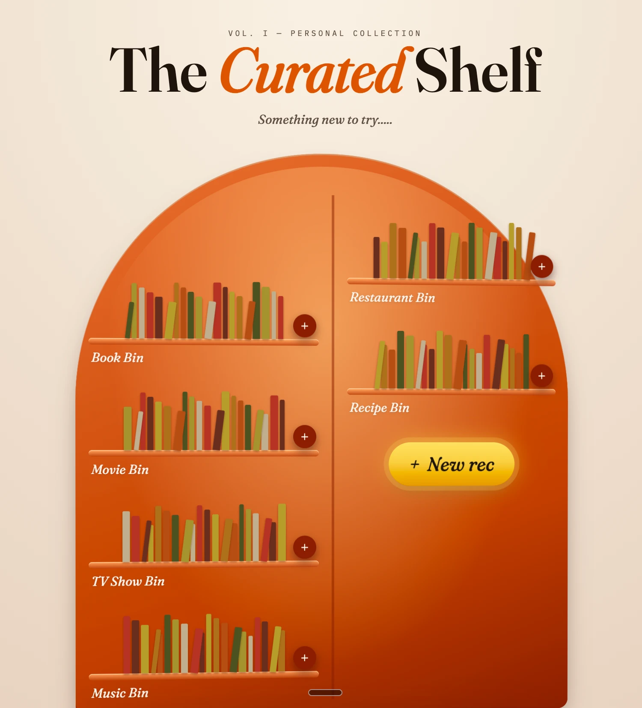
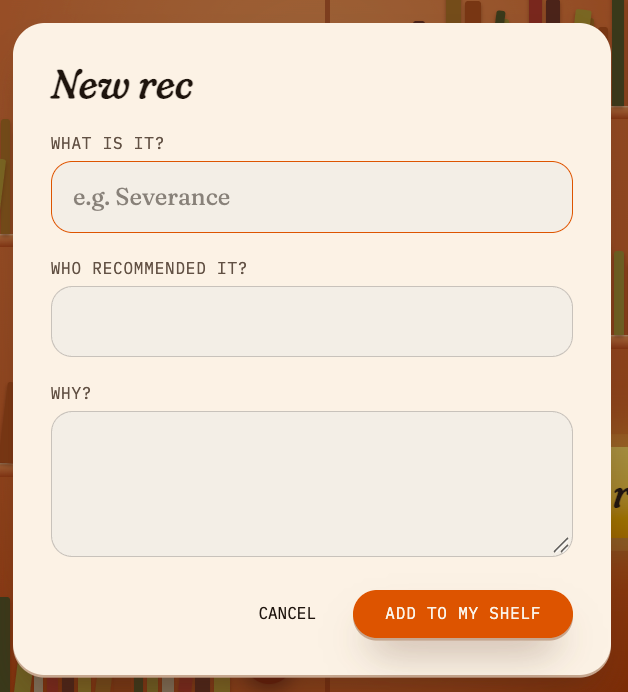
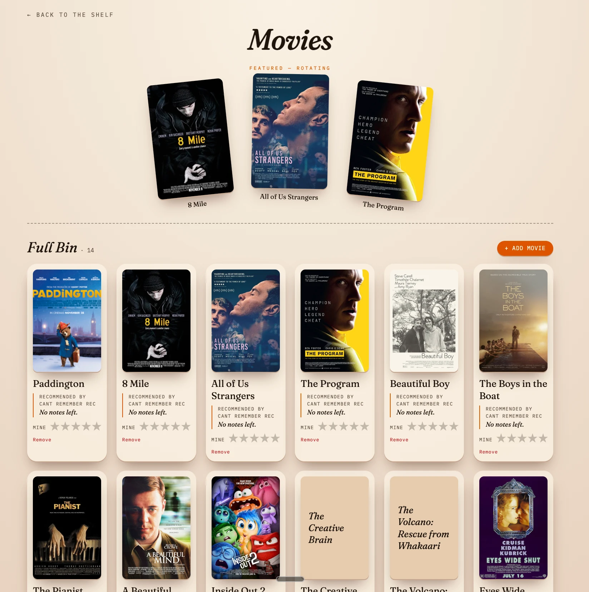

A curated digital interface storing all of my recommendations from friends in one place — a shelf for me to visit later, or share with others. Every book, film and restaurant somebody tells you about is worth keeping; almost none of them survive the walk home.
The shelf is divided into bins: books, movies, TV shows, music, restaurants and recipes. Each one fills up with what is waiting, and a plus button puts something new on it. When you cannot choose, “New rec” picks for you.
Adding something asks three things: what it is, who recommended it, and why. The last two are the point. A title on its own is a chore; a title with a friend attached, and their reason for pressing it on you, is worth getting to.
A bin opens onto a rotating set of featured picks and then the full bin with its count. Each card carries the cover art, who recommended it, their note, and a rating of your own once you have got to it.



Built with Lovable in a one-hour session, on TanStack Start, React, TypeScript and Tailwind.